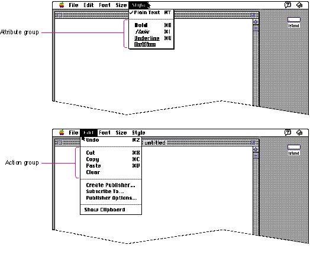
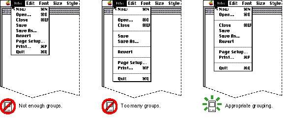

|
|
Grouping Items in MenusThe items in a menu should be logically related to each other and to the menu title. Grouping items in a menu breaks up the menu visually so that it's easier to quickly locate items. This technique lends visual clarity to the interface.Logical grouping of menu items is the most important aspect of arranging your menus. In general, place the most frequently used menu items at the top of the menu. Put the least frequently used items at the bottom of the menu. However, create groups that make sense to the user rather than simply grouping all the most-used items at the top of the menu. Group actions
together and attributes together in a menu that
contains Figure 4-12 Menus with appropriate groups  How many dividers to use is partially an aesthetic decision. Rememberthat the Macintosh interface relies on aesthetic integrity as a means of good communication. Figure 4-13 shows a menu that depicts the right balance of grouping contrasted with two menus that show insufficient grouping and too much grouping. Use this picture as a visual guide when trying to decide how many dividers to use to group items in your menus. Figure 4-13 Grouping items in menus  |